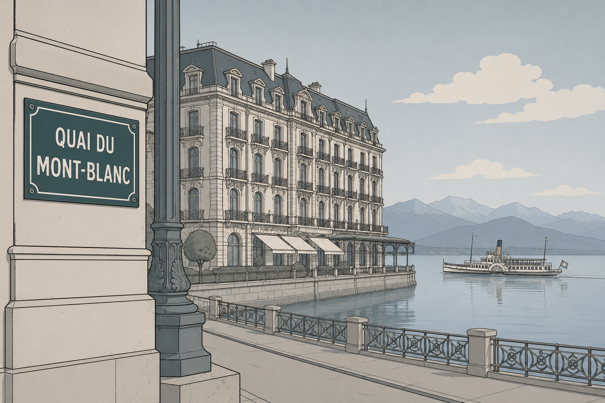

Sissi!
A Play

Cast
The Instructor · Sissi · The Other Students · The First Student
The New Student · Napoleon · The Caretaker
(A classroom at the Institute for the Advancement of Dictatorships. The tall window, the lake beyond it, flat and grey in the morning light. The far shore is just visible. The students sit at their desks. The Instructor stands at the front. Beside him, a girl in a simple white dress.)
The Instructor
We have a new student. Please welcome her.
(He glances at her. She does not react.)
The Instructor
Perhaps you would introduce yourself.
Sissi
My name is Elisabeth, but everybody calls me Sissi. I'm seventeen.
(A beat.)
Sissi
When I was sixteen, I became an empress. But that's a long time ago.
The Other Students
An empress!
Sissi
It was less fun than you might think.
(A beat.)
Sissi
My hobbies are poetry and horse riding.
The First Student
(pointing at the New Student) He has a beautiful mare.
The New Student
She's called Veritata.
Sissi
That's a beautiful name.
The New Student
You can ride her anytime.
Sissi
I'm looking forward to that.
(A knock on the door. Enter the Caretaker and Napoleon.)
Napoleon
Sissi!
(Sissi curtsies.)
Sissi
It's such an honour, Your Majesty.
(Napoleon takes a seat at the back of the room. The Caretaker leaves.)
The New Student
Which country did you rule?
Sissi
I didn't rule at all. That was my husband's job. But to answer your question, it was Austria and Hungary.
(A beat.)
Sissi
And Bohemia, Dalmatia, Croatia, Slavonia, Galicia, Carinthia, Moravia… I forget the full list.
The Other Students
Wow!
Sissi
My last ever trip was to here. I stayed on the other shore.
(She turns to the window.)
The First Student
You were stabbed there.
Sissi
Yes, I was, wasn't I. The man was called Luigi.
(A beat.)
Sissi
I still find that comical.
(She looks at the water.)
Sissi
It was the tenth of September, 1898.